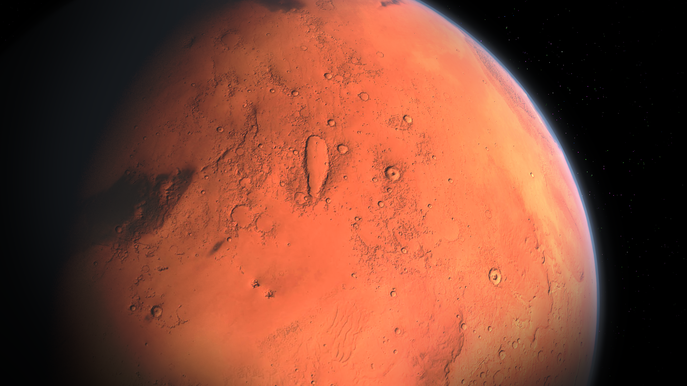

Novus Space Expolration setzt alles daran, die Menschheit in eine neue Ära
interplanetarer Zivilisation zu führen. Unsere Mission erstreckt sich über
mehrere aufregende Phasen:
Erkundung:
Wir führen fortschrittliche Erkundungsmissionen durch,
um den Mars in all seinen Facetten zu verstehen. Unsere Roboter und
Rover sind die Vorreiter, die den Weg für die kommenden Schritte bereiten.
Infrastruktur etablieren:
Novus Space Expolration plant den Aufbau einer umfassenden
Infrastruktur auf dem Mars. Angefangen bei Landeplätzen für Raumfahrzeuge bis
hin zu Lebenserhaltungssystemen – wir schaffen die Grundlagen für eine dauerhafte Präsenz.
Kolonialisierung:
Unsere Visionäre arbeiten daran, eine lebendige und autonome Kolonie auf dem
Mars zu errichten. Wir entwickeln innovative Technologien für nachhaltige Ressourcennutzung und schaffen
Lebensräume, die den Herausforderungen des Mars gewachsen sind

Warum der Mars?:
Rote Planet bietet eine einzigartige Gelegenheit für die Menschheit,
über ihre bisherigen Grenzen hinauszuwachsen. Durch seine Nähe zur Erde und Ressourcenpotenziale wie Wasser und
Eis ist der Mars der ideale Kandidat für die menschliche Kolonialisierung. Zudem eröffnen sich auf dem Mars neue
wissenschaftliche, technologische und wirtschaftliche Möglichkeiten.
Innovation und Partnerschaft:
Space Exploration sind nicht allein auf diesem Weg. Wir streben nach
Partnerschaften mit führenden Raumfahrtorganisationen, Regierungen, Forschungseinrichtungen und Unternehmen, um gemeinsam
die Herausforderungen der Marskolonialisierung zu bewältigen.
Die Zukunft gestalten:
Die Erforschung und Kolonialisierung des Mars sind nicht nur technologische
Meisterleistungen, sondern auch ein Schritt in die Zukunft der Menschheit. Nova Space Exploration lädt Sie ein, Teil dieser aufregenden
Reise zu sein und gemeinsam die Pforten zu einer neuen Ära der Raumfahrt zu öffnen.
Sie sich vor, die Sterne zu erreichen – mit Novus Space Exploration, wo die Zukunft beginnt!